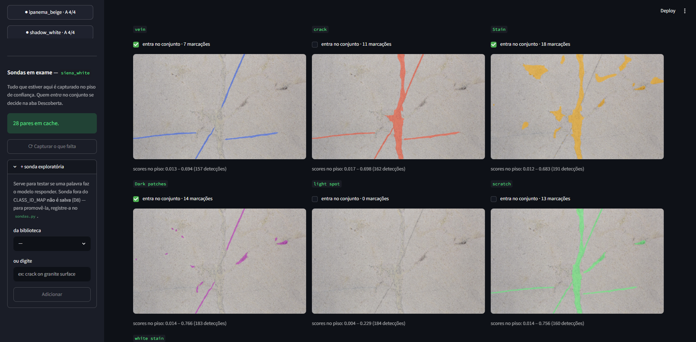

Prévia do TCC · Jacitec 2026
ARIA
Análise e Reconhecimento Inteligente de Anomalias em chapas de rochas ornamentais, com critério de marcação explícito e calibrado por litologia
Henrique Machado de Oliveira
Orientador: Prof. Dr. Rafael Silva Guimarães
Bacharelado em Sistemas de Informação · Ifes Cachoeiro de Itapemirim
O problema
Marcar defeito em chapa depende de quem olha, e anotar à mão para treinar um modelo não resolveu
- A marcação de anomalias é feita por inspeção visual. O critério vive na experiência do operador e não pode ser auditado.
- O caminho óbvio é anotar à mão e treinar um YOLO. Um trabalho vizinho fez isso com 1.088 imagens deste mesmo dataset.
- Pergunta do ARIA: dá para gerar os rótulos sem anotar à mão, com um critério escrito e reproduzível?
0,04–0,21
mask mAP50-95 do YOLO11-seg treinado sobre anotação manual (FracStoneAI). Os próprios autores apontam ruído e defeitos omitidos na anotação.
A proposta
Professor e Aluno: o modelo caro roda uma vez, o rápido roda na linha

O Professor (SAM3) é um modelo de fundação guiado por texto: gera os polígonos sem anotação humana. O Aluno (YOLO11-seg) aprende com eles e faz a inferência em produção.
Os dados
Um dataset público, desbalanceado de propósito
34.630
imagens de chapas polidas, partição original 70 / 15 / 15
45
litologias, de 106 a 4.588 imagens cada
4
faixas de volume (A, B, C, D) com 11, 6, 14 e 14 litologias
- O desbalanceamento vira variável do experimento: especializar por litologia vale a pena com quanto dado?
- A execução segue as faixas, da maior para a menor. Cada faixa fecha como resultado próprio. Hoje: faixa A.
Como o SAM3 procura
O Professor procura por palavras: cada sonda é um prompt de texto

calibrador · aba Descoberta · siena_white
- 7 sondas registradas:
vein crack Stain Dark patches light spot scratch white stain
- Cada detecção vem com um escore. O que vira marcação depende de onde se corta esse escore.
- Esse corte, o limiar, muda de rocha para rocha: o mesmo número marca demais num granito escuro e de menos num mármore claro.
O protocolo de calibração
Quatro imagens, um limiar por sonda, e um critério escrito

calibrador · aba Limiar · um controle, quatro prévias, a curva
- Descoberta: a chapa mais rica decide quais sondas entram.
- Sutil, típica e forte: um único limiar é testado nos três casos.
- A regra sugere o joelho da curva limiar × marcações. O autor pode divergir, e precisa escrever por quê.
- Imagens só do
train/. O test/ fica intocado para a avaliação.
A varredura de limiar é feita fora da linha, sobre um cache: o SAM roda uma vez por imagem e sonda. Verificado contra o SAM rodando de novo em cada limiar: 32 comparações, nenhuma divergência.
Primeiro resultado · faixa A calibrada
Em todas as sondas, o autor cortou mais apertado que a regra
45 / 45
sondas com o limiar do autor acima do joelho da regra, nas 11 litologias da faixa A
3,3×
razão mediana entre o limiar do autor e o da regra (de 1,1× a 17,9×)
nevada_black
7,9×
santa_cecilia
4,8×
ipanema_beige
4,6×
ubatuba_green
4,2×
white_mirage
3,4×
golden_storm
3,3×
white_olympus
3,1×
itaunas_white
2,9×
san_francisco_green
2,8×
siena_white
1,9×
shadow_white
1,7×
razão mediana por litologia · traço = 1× (igual à regra)
homogêneamovimentada
Na chapa
Mesma chapa, mesmas sondas: só o limiar muda

Exemplos ilustrativos, não evidência: mostram o que muda, não qual está certo. Nas vagas típica e forte, a regra produz de 7 a 228 marcações por chapa; o autor, de 0 a 46. Quem diz qual acerta é o conjunto de referência (próximos passos).
O que a calibração está sugerindo
Nas rochas movimentadas, o vocabulário parece não dar conta

- Em 3 das 4 movimentadas (e numa homogênea), o critério escrito diz o mesmo: "parece faltar alguma sonda".
- A
white stain nasceu calibrando uma delas.
Hipótese, ainda não resultado: a natureza gera mais formas do que as palavras de um prompt conseguem nomear, e isso piora quanto mais heterogênea é a rocha. O Experimento 1 é que vai medir.
Estágio 1 · classificador de litologia
Reproduzir o Xception mostrou que o número depende de como se divide o dataset
| Divisão dos dados | Acurácia no teste | O que está no teste |
|---|
| Sorteio por imagem (como o original) | 99,92% | chapas vizinhas do mesmo bloco das de treino |
| Partição oficial do dataset | 96,72% | em algumas rochas, um bloco que o treino não viu |
Mesmo modelo, mesma receita. A diferença de ~3 pontos vem da divisão: imagens em sequência são chapas vizinhas, com os mesmos veios. O trabalho original reportou 99,21% com sorteio por imagem. Os dois números vão para a monografia.
Onde o projeto está
A faixa A está selecionada e calibrada

44 / 180
imagens de calibração selecionadas
11 / 45
litologias calibradas: a faixa A inteira
Próximos passos
Do que muda para o que acerta
- Conjunto de referência: ~50 imagens do
test/, anotadas à mão antes de o SAM rodar nelas.
- Experimento 1: SAM default × regra × calibrado pelo autor, medidos contra a referência (IoU, precisão, recall, falso positivo).
- Experimento 2: Aluno especialista por litologia × generalista, faixa por faixa.
- Gerar os rótulos em lote e treinar os Alunos YOLO11-seg.
- Ligar o classificador ao Aluno da litologia.
- Preferência cega com especialista do setor: máscara A × B, sem identificação.
Obrigado
Perguntas?
O critério de marcação deixa de viver na experiência de quem olha e passa a ser um arquivo: versionado, comparável e auditável.
Henrique Machado de Oliveira · Ifes Cachoeiro de Itapemirim